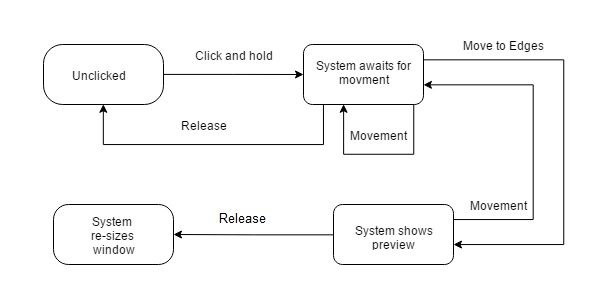

Split View
One of the main benefits of split view is the ability to compare two windows while working there for increasing efficiency. Split view is a method to quickly resize opened windows so that they take up half the screen. This is done in Windows 7-10 and OS X El Capitan by dragging top of the frame to the very edge of the screen.
Typical Appearance
Split view is a feature in current operating systems that allows the user to divide thier screen between two applications. This feature appears as a bar in between the to applications with three dots in the bar. However this feature is not widely used by users on the PC platform.

The most common version of split view when using a PC is created by dragging the window to the edge of the screen while on the desktop. The other window is adjusted by dragging another window to the other edge of the screen

Typical Behavior
The usual behavior for split view is resizing a window when dragged to the edge of the screen. If the top of the window is clicked and dragged to the left or right edge, the window will resize to half of the screen size. If dragged to the top edge of the screen the window will resize to the entire screen size.

In Windows 10 Microsoft updated the features to allow the user to quickly select what was needed on the other side of the screen. After resizing the first page, split view would have all other applicatons appear on the other side of the screen so one could be selected. This would improve the effiency of the user, because the would not need to search for the other application.

OS X El Capitan uses features that are very similar to Windows 8 app view, such only being usable in full screen mode. El Capitan also has some similarities with Windows 10 being able to select the other app that goes on the other side.

Events
There are numerous events that signal to the user what the computer is about to do. The starting state of any window is unclicked. When clicked and held the system waits for the movement of the mouse. When moving the system continuously refreshes the location of the window. If the left mouse button is released, the window reverts to an unclicked state. If the window moves to the edge of the screen, the system shows a preview of what the size of the window will be. If the user releases the mouse, the window will be resized and return to the unclicked state.
State Diagram
Variants
Although there are not many variants of split screen, there were alternate forms that were influenced this component.
In Windows XP dragging to the edges of the screen did nothing. Instead the user had to right click window in the task bar to get the windows to tile horozontally. This is very inefficient so in Windows 7 Microsoft allowed dragging windows to the edge of the screen.
In Windows 7 the split screen feature was very useful. It included many of the basic features that were in Windows 8 split view.
Windows 10 kept all the features that Windows 7 had, but also added cornering. Conering allowed the user to split the screen four ways. Extra features also allowed the user to fill in blank spaces for different configurations such as three windows each with different sizes.
OS X El Capitan has a strange way of doing split screen. Starting split screen requires that a user click on the maximize button and then hold and drag to create a split screen. When the split screen is created the operating system goes into full screen mode.
Priority Metrics
Learnability
Learning how to use split view is incredibly simple. The motion of dragging the application window to the screen's edge is very repeatable and feels very intuitive. Most users should understand how to operate the component after watching another user.
Efficiency
Using split view increases the efficiency of the user significantly. Instead of "alt-tabbing" to compare two projects. The user is able to look at both projects at the same time. An inefficient way to make a split screen is to resize the windows manually. This method takes more actions and takes more time. Therefore using the snap feature in Windows is very efficient.
Memorability
Memorizing how to use split view is fairly easy. The simplicity of the component is what makes it easy to recall when needed. With Windows 10 the cornering feature makes memorizing more complicated, but even if forgotten there are other less effiecient ways of doing the same thing.
Errors
Errors can always happen, but with split view errors are very forgivable. One way split view reduces errors is by providing a preview of how much area the resized window will take. This preview ensures that the user knows if the mouse is in the correct location. With cornering in Windows 10 one error that commonly appears is when the user drags the window to the corner to try to split the screen in half. This will result in an error, but the preview of the what the resized window should look like will catch most errors.
Satifaction
Many users of of the split view feature are very satisfied with the results. Most users want to learn simpler and faster ways of doing things on the computer. When users learn about split view after years of using other methods they would most likely respond will gratitude.
Key Characteristics
Simplicity
The reason that split view is a great component is because split view is simple to use and effective. Most users learn how to use the system quickly and then use it constantly. Because of the simplicity split view is continued in Windows 10, with a few upgrades.
Platform Specific Instances
Windows 8
In Windows 8 many users did not use the new feature of making a split view of two applications outside of the desktop. The switching between application mode and destop mode reduced efficiency and caused confusion with most users. Because of the failure of Windows 8, most people did not get to experiement with this component.
Windows 10
Windows 10 took the best from Windows 7 and removed many features that the customers didn't like from Windows 8. Many users still liked how they could split view in the desktop, so Microsoft upgraded the functionality of the feature. In Windows 10 screens can be split up to four ways. With the removal of the start screen from Windows 8 that version of split view was also removed.
OS X El Capitan
El Capitan has a confusing way of making split screen. Maybe it is because I am a Windows user, but clicking and dragging the maximize button does not seem intuitive for first time learners. Another problem is the switching between the full screen and destop which creates many errors and increases inefficiencies.
El Capitan has a confusing way of making split screen. Maybe it is because I am a Windows user, but clicking and dragging the maximize button does not seem intuitive for first time learners. Another problem is the switching between the full screen and destop which creates many errors and increases inefficiencies.
References
http://blogs.windows.com/windowsexperience/2015/06/04/arrange-your-windows-in-a-snap/https://www.youtube.com/watch?v=Yw0EIqi0FuI&ab_channel=HCKproductions
https://www.youtube.com/watch?v=2PLKnxkmj00&ab_channel=TCIIT
https://www.youtube.com/watch?v=RRbAqalkrws&ab_channel=BenOostdam
https://msdn.microsoft.com/en-us/library/windows/apps/hh465310.aspx
https://msdn.microsoft.com/en-us/library/windows/apps/dn997787.aspx https://msdn.microsoft.com/en-us/library/windows/apps/windows.ui.xaml.controls.splitview.aspx#properties
http://www.guidingtech.com/51881/split-view-el-capitan/